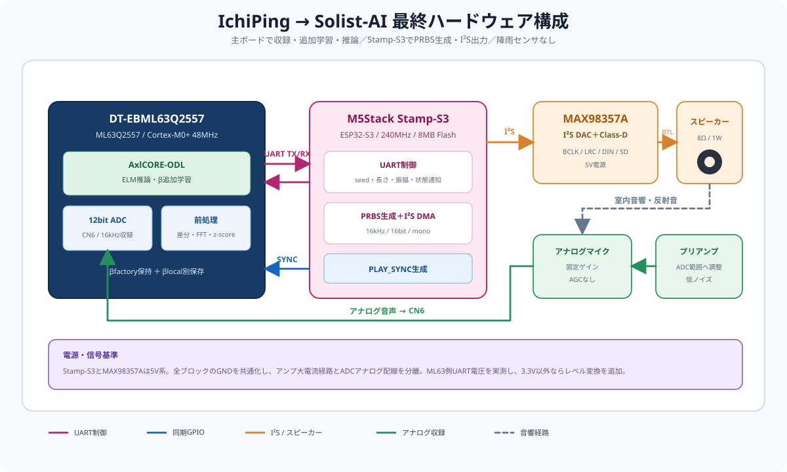

IchiPing → Solist-AI 移植 検証レポート
外出先で空が暗くなり雨——「窓、閉めてきたっけ？」。戻る時間はない。IchiPing は 1 個のマイクで家中の窓・扉の状態を一発で確認し、スマホへ通知する。これがこのプロジェクトの出発点となるユースケース。


IchiPing とは（移植元）
IchiPing は「1 個のマイクと 1 発の Ping（探査音）だけで、家中の窓・扉の開閉状態をまとめて推定する」エッジAIデバイス。部屋の反響は窓や扉の開閉で変化するため、既知の音を出して反響を分析すれば、複数の開口部の状態を 1 回の観測で同時に当てられる、という発想。
窓 3・扉 2 の計 5 箇所、それぞれ開/閉 → 組合せは 2⁵ = 32 状態。これを 1 マイク＋1 スピーカで識別する。「cls（class＝クラス）」は識別する状態の種類数で、32cls＝32 状態すべて、14cls＝後述の観測等価でまとめた 14 種を指す。

IchiPing が実現している技術
- 能動音響センシング：スピーカから PRBS（Pseudo-Random Binary Sequence＝擬似ランダム2値系列。M系列とも呼ぶ、白色雑音に近い「既知の探査信号」）を再生し、部屋の音響応答（RIR＝Room Impulse Response、室内インパルス応答）をマイクで収録する。
- baseline 差分特徴：全閉状態の応答（＝baseline、基準波形）を差し引いてから FFT（Fast Fourier Transform＝高速フーリエ変換。信号を周波数成分に分解する処理）。室内の共通応答が相殺され、開閉による差分だけが際立つ。
- 1D-CNN による分類：1D-CNN（1次元の畳み込みニューラルネットワーク）でスペクトルから状態を分類。
- 観測限界の理解（32→14）：扉が閉じるとその先の部屋は音響的に「聞こえない」。よって 32 真状態のうち一部は原理的に区別できず、14 個の観測等価クラスに集約される（下図）——これが素朴な精度上限。ただし実際には、閉じた扉をわずかに漏れる「透過音」に状態差が残る。IchiPing はモデルを大型化してこの微小な特徴まで学習し、現環境データ＋現地校正と併せて 32cls を最大 100% へ引き上げ、観測等価の壁を越えた。移植版（Solist-AI）もMCU 上でのリアルタイム追加学習により同じ壁を越え、閉扉越しの透過音まで識別する（→ §5）。

Solist-AI への移植
移植先の Solist-AI（ML63Q2557） は オンデバイス学習IC＝クラウドや再プログラムなしに機器の現場で学習・再学習できるエッジ AI チップ。能動音響は設置環境に依存するため高精度には設置環境への適応が不可欠で、IchiPing も現地でのベースライン校正と現環境データの学習により 32cls を 88〜100% まで引き上げている（→ §5）。Solist-AI の利点は、その環境適応の「重み学習」をデバイス上で完結でき、しかも極少パラメータで実現できる点にある（詳細は §9）。
ただしアルゴリズムは、IchiPing の深い 1D-CNN から Solist-AI の浅い ELM（Extreme Learning Machine。入力→中間層の重みは乱数で固定し、出力側の重みだけを学習する軽量な学習機。詳細は §2）へ置き換わる。本レポートはこの移植が成立するかの検証結果である。
（追加学習不要・多数決100%）
（MCU追加学習後・多数決100%）
（実機16KB に収まる）
結論：14cls・32cls とも公式 Solist-AI シミュレータ（SLV1.00.04）で目標精度を実証。14cls は工場出荷の重みを焼くだけ（追加学習不要）で 99.4%、32cls は設置環境での少量データによる MCU 追加学習で 99.1%。IchiPing CNN（現地校正後 32cls 最大 100%）と同等クラスの精度を、学習パラメータ約 1/51・SRAM 16KB の小型 MCU・オンデバイス学習で実現した点に価値がある（→ §9）。いずれも実機メモリ枠（SRAM 16KB / Flash 256KB）に収まる。
モデル構造（IchiPing CNN → Solist-AI ELM）
移植元の IchiPing は深い 1D-CNN（全層を学習）、移植先の Solist-AI は浅い ELM（β のみ学習）。アーキテクチャが根本的に変わるため、まず両者の構造を並べて示し、何がどう置き換わったかを説明する。
移植元：IchiPing CNN（Neutron 互換 XL, 32cls ≈ 104,000 params）
生の対数振幅スペクトル 1×1024 を入力し、Conv を 4 段重ねて特徴を学習で抽出、GAP（大域平均プーリング）＋1×1 Conv ヘッドで 32 クラス softmax。重みは全層を誤差逆伝播で学習する。実装は MCXN947 の Neutron NPU 向けに Conv2D(kernel=1×K) を用いる（Conv1D は TFLite で Reshape を要し NPU 不利なため）が、カーネルが 1×K のため演算は実質 1D。
移植先：Solist-AI ELM
Solist-AI のアルゴリズムは ELM（Extreme Learning Machine）＝隠れ層1層の3層FFNN。最大の特徴は、入力→隠れ層の重み α を学習せず seed 乱数で固定し、隠れ層→出力の重み β だけを学習する点。学習・保存パラメータが激減し、現場でのオンデバイス学習が軽量に行える。
ODL_GenerateRandomNumber により再生成＝保存不要）、β のみ学習。何が変わったか（CNN → ELM）
| 観点 | IchiPing 1D-CNN（移植元） | Solist-AI ELM（移植先） |
|---|---|---|
| 特徴抽出 | Conv 4層で学習して獲得 | α は乱数固定（学習不可）＋ 前処理で代替 |
| 学習する重み | 全層 ≈ 104,000 | β のみ ≈ 2,048 |
| 総パラメータ | ≈ 104,000 | ≈ 12,700（α 10,688 は保存0） |
| 入力 | 生 1×1024 log|FFT| | baseline差分FFTを 167bin にクロップ |
| 非線形性 | ReLU×4 + BatchNorm（深い） | hard_sigmoid×1（浅い） |
| 学習方法 | 誤差逆伝播（GPU/クラウド） | 最小二乗（オンデバイス可） |
| 環境適応 | 学習データで吸収 | MCU 上の追加学習（β）で吸収（32cls） |
移植の核心： CNN の Conv 層は実質「スペクトル特徴の抽出器」を学習で獲得していた。Solist-AI は α を学習できない制約があるため、その役割を ①前処理（baseline 差分＋情報帯域クロップ＋標準化） と ②MCU 上の追加学習（β） に肩代わりさせた。結果、学習パラメータを 104k → 2k（約 1/51） に圧縮しつつ、14cls・32cls とも同等以上の精度に到達。「深い特徴学習」を「賢い前処理＋ランダム特徴＋MCU 追加学習」で代替したのが移植の要点。
順伝播の式
h = hard_sigmoid( (s · x) · α ) hard_sigmoid(z) = max(0, min(1, 0.2z + 0.5))
y = h · β 予測クラス = argmax(y)
- α：(167 × 32)、一様乱数 U[−0.205, +0.205]（seed=1）。学習せず、チップ上で seed から都度再生成。
- β：(32 × C)（C=14 または 32）。PC で最小二乗学習し
ODL_SetWeightBeta相当で焼込。 - 入力スケール s = 0.5：実効 scaleAlpha を 0.1 相当に下げる調整。別環境への汎化が大幅改善（14cls で 86%→99%）。
- 演算は bfloat16、活性化は hard sigmoid（AxlCORE-ODL 準拠）。
14cls と 32cls の違い
| 項目 | 14cls モデル | 32cls モデル |
|---|---|---|
| 出力数 C | 14（観測等価クラス） | 32（生の5bit状態） |
| β 形状 | 32 × 14 | 32 × 32 |
| 運用 | 追加学習不要（工場βのみ） | 設置環境で追加学習（少量データ） |
| 意味 | 扉閉で内側不可視等の観測等価をまとめた、環境に頑健な分類 | 全状態を区別。環境固有の微差を使うため MCU 追加学習が前提 |
| α・隠れ層 | 共通（seed=1, m=32, D=167）— β のみ差し替え | |
特徴抽出パイプライン
入力ベクトルは「励振音と baseline（全閉状態）の差分スペクトル」。PRBS は毎回同一系列がサンプル整列再生されるため、時間領域で baseline を引くと室内の共通応答が相殺され、扉/窓による差分だけが残る。
なぜ baseline 差分か
同一 PRBS 系列がサンプル整列して再生されるため、全閉時の波形を基準に時間領域で引くと、部屋・スピーカ・マイクに由来する共通応答が高い一致度で相殺される。残るのは扉/窓の開閉で変わる成分だけ。これにより小さな状態差が際立ち、浅い ELM でも分離できる。
学習パイプライン（PC 自作）
学習データの内訳
| 要素 | 内容 | 倍率／数 |
|---|---|---|
| 元キャプチャ | IchiPing PRBS 励振 v6–v11（学習）／ v12（テスト）。各 run = 32状態 × 50フレーム | 6 run = 9,600 frame |
| クロスベースライン | 差分の基準波形を 3 種（v6 / v9 / v11 の全閉 s00000）に振り、baseline 揺らぎに頑健化 | ×3 |
| オーグメンテーション | 特徴空間で ① ガウス雑音 σ=0.5dB ② 全帯域レベルジッタ σ=1.0dB（原本＋拡張2種） | ×3 |
| 学習フレーム合計 | 上記の積（標準化あり） | 86,400 frame |
| テストフレーム | v12（14cls factory 用 1,600 ／ 32cls 追加学習後 holdout 1,280） | 1,280–1,600 |
| MCU 追加学習（32cls） | 設置環境で各状態を少量採取して β を再計算 | 10 frame / 状態 |
シミュレーション結果（公式 Solist-AI Sim SLV1.00.04）
PC で算出した β をモデルにロードし、公式シミュレータで「推論のみ（Test only）」を実行。指標は 2 つ：フレーム精度（音を 1 回（1 フレーム）測るごとの正解率）と、多数決精度（同じ状態を複数フレーム観測し、その多数決で 1 つの状態を判定したときの正解率＝実運用に近い判定精度）。
| モデル | 運用条件 | フレーム精度 | 多数決精度 | テスト数 |
|---|---|---|---|---|
| 14cls factory | 追加学習なし（v6–11学習→v12初見） | 99.38%（1590/1600） | 100%（14/14） | 1,600 |
| 32cls on-device | MCUで10frame/状態を追加学習後 | 99.06%（1268/1280） | 100%（32/32） | 1,280 |
| 32cls factory | 追加学習前（出荷直後の参考値） | 77.8% | 81.2% | 1,600 |
14cls — 追加学習不要で完成
入力スケール調整で別セッション汎化が成立し、工場 β を焼くだけで 99.4% / 多数決100%。観測等価クラスは環境変化に頑健で、追加学習が不要。
32cls — MCU追加学習で完成
32 状態は環境固有の微差で区別するため、出荷時 77.8% → 各状態を約10フレーム与えて MCU で追加学習すると 99.1% / 多数決100%。追加学習後の環境では観測等価とされた状態も 99.6% 区別できた。
★ 観測等価の壁を越えた — 閉扉越しの「透過音」を識別
本来、扉が閉じるとその先は音響的に観測できず、32 真状態の一部は原理的に区別不能で 14cls が上限のはずだった（§1 観測等価）。ところが MCU で追加学習した 32cls は、その「区別できないはず」の等価状態どうしも 99.6% 区別できた。
内訳：v12 holdout 1,280 フレーム中、32cls の誤りは 12 件のみ。うち観測等価グループ内での取り違え（物理的に曖昧なはずの混同）は わずか 5 件。残り 7 件は等価をまたぐ単純な残差ノイズだった。
これは、閉じた扉をわずかに透過・回折する音（透過音）の微細なスペクトル差を ELM が拾い、MCU 上の追加学習でその環境固有の差分を取り込んだため。単純な観測等価の上限を超える識別性能を獲得したといえる。ただしこの微差は環境固有なのでMCU での追加学習が前提（追加学習なしの別環境では区別が崩れ 32cls factory 77.8% に低下）。なお移植元 IchiPing は大型 CNN でこの微小特徴を学習して同じ壁を越えたが、本移植版は極少パラメータ＋MCU 追加学習で同等を達成した点が異なる。
本移植版の位置づけ（公平な比較）
精度は IchiPing CNN（現地校正後 32cls 100%）と同等クラス。差は手段にある——IchiPing は新環境への適応に PC での再学習（現環境データを足して CNN を学習し直す）を要するのに対し、Solist-AI は環境適応の重み学習（β）をデバイス上で完結でき、しかも学習パラメータ約 1/51（β≈2,048 vs 104,000）・SRAM 16KB の小型 MCU で動く（→ §9）。
⬇ ベストモデル＆テストデータのダウンロード
公式 Solist-AI Sim（SLV1.00.04）にそのままロード／投入できる一式（model1.xlsx＝seed=1, m=32, β 焼込済 ／ テスト CSV＝入力スケール適用済）。
| クラス | モデル | テストデータ |
|---|---|---|
| 14cls 追加学習不要 99.4% | model1_BEST_14cls.xlsx 出力14 / β=32×14 | test_BEST_14cls.csv 1600行×181列 / 入力×0.5 |
| 32cls MCU追加学習後 99.1% | model1_BEST_32cls_ondevice.xlsx 出力32 / β=32×32 | test_BEST_32cls_ondevice.csv 1280行×199列 / 入力×1.0 |
Sim で推論を再現する手順
① テスト CSV のデータ構造
- 1 行 = 1 フレーム（2 秒キャプチャ）、ヘッダ行あり、カンマ区切り。
- 列構成：先頭 167 列 = 入力特徴
f1…f167（FFT(audio−baseline) 400–3000Hz、z-score 標準化済、学習時の入力スケール適用済＝14cls:×0.5 / 32cls:×1.0）、続く C 列 = 正解 one-hotc0…c{C−1}（C=14 または 32）。 - サイズ：14cls = 1600 行 × 181 列（167+14）、32cls = 1280 行 × 199 列（167+32）。
② Sim パラメータ（推論のみ＝Test only）
| タブ | 設定 |
|---|---|
| 1. Training（ダミー） | 次元合わせのみ。任意の同形 CSV（テストを流用可）。Input: 先頭列 1 / 1行 / 167列、Expected: 先頭列 168 / 1行 / C列 |
| 2. Test | 上記テスト CSV。Input 1 / 1 / 167、Expected 168 / 1 / C、chunks = Automatic |
| 3. AI 設定 | Input 167 / Hidden 32 / Output C（ロードで自動）、Activation = Sigmoid、Loss = MSE、Forgetting = 1、Seed = 1 |
| 3. 実行 | 「Using loaded AI model」ON → 該当 model1.xlsx を Load、「Test only」ON → Sim |
C = 14 または 32（モデルに合わせる。14cls は Expected 列数を必ず 14 に）。
③ 結果の読み方
- 出力ファイル
data_*_2_test.xlsxに各フレームのy_expected_*とy_actual_*。 - 予測クラス = y_actual の argmax。フレーム精度 = 一致率。多数決精度 = 同一状態の全フレームで y_actual を合算して argmax。
- 期待値：14cls フレーム 99.38% / 32cls フレーム 99.06%（各 多数決 100%）。
モデル諸元：ni=167, m=32, no=C, seed=1, scaleAlpha≈0.205, hard sigmoid, bfloat16（α は seed 再生成・β 焼込済）。生成スクリプトは sim/build_best_mcu.py / sim/emit_best.py。
実機実装仕様（ML63Q2557）
| 項目 | 仕様 / 設計値 |
|---|---|
| MCU | ML63Q2557（Cortex-M0+ 48MHz、FPU 無）+ AI アクセラレータ AxlCORE-ODL |
| メモリ | Flash 256KB ／ SRAM 16KB |
| モデル | 入力 D=167 ／ 隠れ m=32 ／ 出力 14 または 32 ／ hard sigmoid ／ bfloat16 |
| AI RAM 使用量 | 約 11KB（16KB 内）。オンデバイス学習時の共分散 P(32×32) も収まる |
| 推論時間 | 約 3.4ms / フレーム（Sim 実測値） |
| 保存パラメータ | α は seed 再生成で 保存 0。β のみ（14cls=32×14、32cls=32×32、bf16 で数KB）→ Flash 余裕 |
| 前処理 | on-chip FFT（≤1024/回）、Hann 窓、baseline 差分、z-score。baseline 波形は別途 Flash 保持 |
| 重み更新 | β のみ（α 固定）。実機 ODL での追加学習、または β を 32×32 連立で自前計算のいずれも可 |
パラメータ規模（IchiPing CNN 比）
IchiPing v1 CNN（Neutron 互換 XL, 32cls）≈ 104,000 パラメータ（全学習）。本 ELM（D=167, m=32）= 総 ≈ 12,700（α 10,688 は乱数固定で保存0 ＋ β 2,048）。学習・保存対象は β のみ＝ IchiPing 比で学習パラメータ約 1/51。これが軽量なオンデバイス学習を可能にする。
実機ハードウェア構成・BOM・接続仕様
採用構成
DT-EBML63Q2557を主ボード、M5Stack Stamp-S3を音声出力用の子ボードとする。両ボード間はUARTで制御・同期し、Stamp-S3からI²SデジタルアンプへPRBSを出力する。マイクはAGCなしのアナログプリアンプを介してCN6へ入力する。降雨センサは搭載しない。
全体構成と役割分担
| ブロック | 担当 | 主な処理 | 接続 |
|---|---|---|---|
| 主制御・AI | DT-EBML63Q2557 | ADC収録、baseline差分、FFT、z-score、ELM推論、β追加学習 | CN6、UART、同期GPIO |
| 音声出力 | M5Stack Stamp-S3 | UARTコマンド受信、PRBS再生成、I²S DMA出力、アンプのミュート制御 | UART、I²S、GPIO |
| 励振 | MAX98357A＋スピーカー | I²Sデータをアナログ音声へ変換・増幅し、室内へPRBSを放射 | I²S、5V、SPK± |
| 収録 | アナログマイク＋プリアンプ | 反射音を固定ゲインで増幅し、ML63Q2557の12bit ADCへ入力 | CN6アナログ入力 |
| モデル運用 | ML63Q2557内Flash | 工場モデルβfactoryを保持し、実機学習βlocalを別領域へ保存 | 内部Flash |
部品表（BOM）
| No. | 区分 | 部品・推奨品 | 数量 | 要求仕様・選定理由 |
|---|---|---|---|---|
| 1 | 必須 | DT-EBML63Q2557 | 1 | ML63Q2557＋AxlCORE-ODL。収録、特徴抽出、追加学習、推論を担当。 |
| 2 | 必須 | M5Stack Stamp-S3（S007） | 1 | ESP32-S3、8MB Flash、UART、I²S、23 GPIO。I²S音声出力と再生同期を担当。 |
| 3 | 必須 | MAX98357A I²S Class-Dアンプモジュール | 1 | I²S DACとモノラルアンプを1枚に集約。5V動作、BCLK/LRC/DIN入力、SD/MODE端子付き。 |
| 4 | 選定 | 8Ω 1Wスピーカー | 1 | 初期試作値。400～3000Hzで十分な音圧と再現性を実測して最終決定。 |
| 5 | 選定 | アナログマイク＋固定ゲインプリアンプ | 1 | AGCなしを使用。出力振幅とDCバイアスをCN6 ADC入力範囲へ合わせる。 |
| 6 | 選定 | 5V電源 | 1 | Stamp-S3とアンプ用。試作時は5V/1A以上を目安とし、最大音量時の電圧降下を確認。 |
| 7 | 条件付き | 2chロジックレベル変換 | 1 | ML63Q2557側UARTが3.3Vでない場合のみ使用。Stamp-S3 GPIOへ3.6Vを超えて入力しない。 |
| 8 | 必須 | 配線・コネクタ・デカップリング部品 | 1式 | UART、SYNC、I²S、電源、GND。アンプ近傍に電源デカップリングを配置。 |
BOMのNo.4～6は音圧、ノイズフロア、CN6入力範囲を実測後に型番を確定する。降雨センサおよび関連配線はBOM対象外。
接続表
DT-EBML63Q2557 ⇔ Stamp-S3
| 信号 | DT-EBML63Q2557側 | Stamp-S3側 | 方向 | 備考 |
|---|---|---|---|---|
| UART_TX | 使用するUARTチャネルのTX端子 | GPIO1 / UART_RX | ML63 → S3 | コマンド、seed、再生長、振幅を送信。 |
| UART_RX | 使用するUARTチャネルのRX端子 | GPIO2 / UART_TX | S3 → ML63 | ACK、READY、エラー、完了通知。 |
| PLAY_SYNC | 外部割込み対応GPIO | GPIO3 | S3 → ML63 | I²S先頭サンプル直前にエッジ出力し、ADC収録を同期。 |
| GND | GND | GND | 共通 | 信号基準。必ず共通化する。 |
Stamp-S3 ⇔ MAX98357A ⇔ スピーカー
| Stamp-S3 | MAX98357A | 機能 | 備考 |
|---|---|---|---|
| GPIO5 | BCLK | I²Sビットクロック | 配線は短くし、GNDリターンを近づける。 |
| GPIO6 | LRC / WS | I²Sワード選択 | 16kHz、16bit、monoを初期条件とする。 |
| GPIO7 | DIN | I²S音声データ | Stamp-S3からアンプへの一方向。 |
| GPIO8 | SD / EN | ミュート制御 | 起動・停止時のポップノイズ抑制に使用。 |
| 5V | VIN | アンプ電源 | Stamp-S3と同一5V系を使用可能。電源容量を確認。 |
| GND | GND | 共通GND | 主ボードを含めて共通化。 |
| — | SPK+ / SPK− | スピーカー出力 | BTL出力のため、どちらもGNDへ接続しない。 |
アナログ収録系
| 接続元 | 接続先 | 信号 | 確認事項 |
|---|---|---|---|
| アナログマイク | 固定ゲインプリアンプ | 微小音声信号 | AGCは使用しない。設置位置を固定する。 |
| プリアンプOUT | DT-EBML63Q2557 CN6 | ADC入力 | 最大音量でも入力範囲を超えないこと。無音時DC値も記録する。 |
| プリアンプGND | システムGND | 信号基準 | I²Sアンプの大電流経路とアナログGND配線を分離し、一点で合流させる。 |
制御・同期シーケンス
UARTには生PCMを流さない。両ボードが同じPRBS生成規則とseedを共有することで、低い通信量のまま再現性を確保する。
学習済みモデルと実機追加学習
工場モデルを保持
元の学習済みα・βfactoryは変更せず保存する。ハードウェア変更後も初期モデルおよび復旧用モデルとして使用する。
実機モデルを別保存
新しいスピーカー、アンプ、マイク、筐体、設置環境でbaselineと学習データを取得し、βのみ更新してβlocalへ保存する。
電気的注意事項
- UART電圧： Stamp-S3は3.3Vロジック。DT-EBML63Q2557の実使用電圧を測定し、3.3V以外なら適切なレベル変換を入れる。
- 電源分離： アンプの瞬間電流でADC基準が揺れないよう、アンプ電源のデカップリングとアナログ系の配線分離を行う。
- 起動ノイズ： GPIO8でMAX98357Aをミュートし、I²Sクロックが安定してから有効化する。
- 未確定端子： DT-EBML63Q2557側のUART、外部割込みGPIO、CN6の端子番号と許容入力範囲は、評価ボード回路図・ユーザーズマニュアルで確定する。
実機での進め方
- 実機構成でデータ再取得：変更後のスピーカ／マイクで v6–v12 相当を収録。本書のクロスベースライン×3・オーグメンテーション×3 をそのまま適用。
- β を PC で再学習（batch-LS、α は seed 固定）→ 14cls / 32cls の β を生成。
- β 焼込 → 推論検証：14cls は追加学習なしで動作確認、32cls は MCU 追加学習（10frame/状態）。
- オンデバイス追加学習の実機確認：
ODL_StartTrainによる追加学習が収束するか実測。収束しない場合は 32×32 連立を自前 C で解くフォールバックに切替（精度は同等）。 - I/O ブリングアップ：CN6 マイク収録、UARTコマンド、Stamp-S3のI²S励振、PLAY_SYNC GPIOによるPRBSと収録の同期。
移植の意義と技術的価値
「自由に設計できる深層 CNN」から「制約の強い Solist-AI」へ——一見すると“格下げ”の移植に見える。しかしこの強い制約の中で同等以上の性能を引き出すこと、そして Solist-AI でしか得られない強みを活かし切ることにこそ、本プロジェクトの技術的価値と面白さがある。
移植の難しさ：自由 → 制約
移植元（自由なモデル構築）
MCXN947 + CNN は、層・チャネル・パラメータを自由に設計し 全層を誤差逆伝播で学習できる。特徴抽出器そのものをデータから獲得でき、約 104,000 パラメータの深いモデルが組めた。
移植先（限定的なモデル構成）
- 入力→中間の重み α は乱数固定で学習できない（＝特徴抽出器を学習で持てない）
- 学習できるのは出力側の β だけ
- 隠れ層は実機 SRAM 16KB の制約で ~32 程度が上限
- bfloat16・FPU 無の小型 MCU（Cortex-M0+ 48MHz）
つまり深い CNN をそのまま移植することはできない。「自由に組めるモデル」を「限られた器」へ作り直す再設計が、本移植の最大の難所だった。
制約を武器に変えた解法
CNN が学習で獲得していた特徴抽出の役割を、①賢い前処理（baseline 差分＋情報帯域クロップ＋標準化）と ②MCU 上でのリアルタイム追加学習（β）に肩代わりさせ、さらに入力スケール調整で別環境への汎化を確保した（14cls 86%→99%）。結果、深い CNN なしで 14cls 99.4% / 32cls 99.1% に到達。
Solist-AI だからこそ得られる価値
① 極少パラメータ
学習・保存するのは β のみ ≈ 2,048（IchiPing CNN 比 約 1/51）。α は seed 再生成で保存ゼロ。モデルは数 KB で完結し、16KB RAM・256KB Flash に余裕で載る。
② 追加学習で精度向上
クラウド不要で設置現場が自分で重みを学習し環境へ適応。これにより観測等価の壁を越え、閉扉越しの透過音まで識別（§5）。IchiPing(大CNN)は同じ適応に PC での再学習が要るのに対し、現場で重みを更新できるのが Solist-AI の本質的な強み。
③ スタンドアロン
ネット不要・低遅延・低消費・プライバシー保全。設置してその場で賢くなり続ける、自己完結のセンサになる。